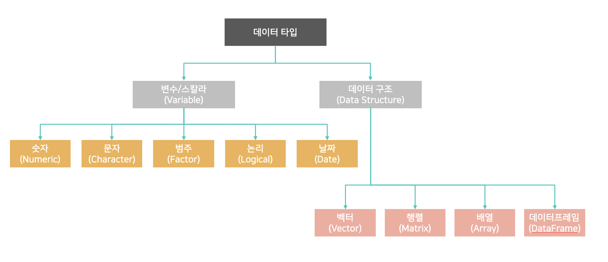

Chapter 2 Data Type and Structure
2.1 R을 사용하기 위한 기본 지식 정리
2.1.1 작업디렉토리 설정
- 현재 작업디렉토리 조회
## [1] "/Users/dangtongbyun/Dropbox/Acorn_Academy/dsWithR"- 작업 디렉토리 설정
2.2 변수(Variable)
 - 숫자, 문자, 범주, 논리, 날짜 등의 데이터 타입을 할당하고 관리
2.2.1 숫자(Numeric)
- 숫자
## [1] 13## [1] "numeric"## num 13- 부동수
## [1] 13## [1] "numeric"## num 12.3- 정수
## [1] 56## [1] "integer"## int 562.2.2 문자()
2.2.2.2 문자열 할당과 함께 로케일 지정
## [1] "apple" "banana" "eggplant"## [1] "apple" "eggplant" "banana"하와이 알파벳 (하 와이어 : ka pīʻāpā Hawaiʻi)은 하 와이어를 쓰는 데 사용되는 알파벳입니다. 19 세기 초 미국 선교사들에 의해 영어 알파벳에서 하와이 언어로 된 성경을 인쇄하기 위해 채택되었습니다.
2.2.3 팩터 (factor)
- 팩터의 기본 사용법
## [1] "factor"## Factor w/ 2 levels "male","female": 1## [1] male
## Levels: male female- 한번에 여려개의 팩터 할당
## [1] male female <NA>
## Levels: male female- 팩터의 레벨 확인
## [1] 2## [1] "male" "female"## [1] "male"## [1] "female"- level 을 지정하지 않을 경우 자동 인지
## [1] student teacher staff
## Levels: staff student teacher2.2.4 논리형(Logical)
## [1] "logical"## logi TRUE## [1] TRUE## [1] "logical"## logi FALSE## [1] FALSE## [1] "logical"## logi TRUE## [1] TRUE2.2.5 날짜타입(Date and Datetime)
- 기본적인 현재 날짜 및 시간 조회
## Warning: package 'lubridate' was built under R version 4.0.2##
## Attaching package: 'lubridate'## The following objects are masked from 'package:base':
##
## date, intersect, setdiff, union## [1] "2021-03-28"## [1] "2021-03-28 16:12:53 KST"- 문자열 에서 생성
## [1] "2017-01-31"## [1] "2017-01-31"## [1] "2017-01-31"- 문자열 아니라도 허용
## [1] "2017-01-31"- 데이트 타임형 생성
## [1] "2017-01-31 20:11:59 UTC"## [1] "2017-01-31 08:01:00 UTC"- 시간대 지정하여 생성
## [1] "2017-01-31 UTC"## [1] "2021-03-28 16:12:53 KST"2.2.6 NA/NaN/Inf 확인 및 처리
## [1] 1 NA NaN Inf## [1] FALSE TRUE TRUE FALSE## [1] FALSE FALSE TRUE FALSE## [1] TRUE FALSE FALSE FALSE## [1] FALSE FALSE FALSE TRUE- NA 처리 : 대부분의 내장 함수들이 na.rm 매개변수를 수용
## [1] 1.52.3 데이터 구조(Data Structure)
2.3.1 벡터 (Vector)
벡터의 생성
## [1] 100 60 80 180## [1] "A" "B" "C" "D"벡터의 형변환
## [1] "100" "BAD" "80" "180"## [1] 1.0 2.0 3.0 4.5백터에 이름 지정
## jone micheal jane jessica
## 1.0 2.0 3.0 4.5벡터에 접근 및 조회
## jone micheal jane
## 1 2 3## micheal
## 2## jone jane jessica
## 1.0 3.0 4.5## jone jane
## 1 3벡터의 길이 조회
## NULL## [1] 4벡터의 연산
## [1] TRUE## [1] FALSE## [1] TRUE## [1] FALSE벡터에 대한 스칼라 연산
## [1] 3 6 9 12 15벡터 합집합
## [1] "A" "B" "C" "D" "E"벡터 교집합
## [1] "C"벡터 차집합
## [1] "A" "B"벡터 비교 : 벡터가 동일한지 비교
## [1] FALSE벡터 순차적 생성
## [1] 1 2 3 4 5 6 7 8 9 10## [1] 1 3 5 7 9입력 받은 배열 크기만큼 순차적 생성
## [1] 1 2 3 4 5 6 7## [1] 1 2 3 4 5 6 7일정한 구간을 반복해서 입력
## [1] 1 1 2 2 3 3 4 4## [1] 1 2 3 4 1 2 3 4 1 2 3 4 1 2 3 4 1 2 3 4## [1] 1 1 2 2 3 3 4 4 1 1 2 2 3 3 4 4 1 1 2 2 3 3 4 4 1 1 2 2 3 3 4 4 1 1 2 2 3 3
## [39] 4 42.3.1.1 연습문제
- 문제1. 1부터 20까지 벡터를 만들고 출력 하고 v1에 저장 하세요
- 문제2. v1의 5번째 항목 부터 10번째 항목을 출력 하세요
- 문제3. v1 벡터의 9번째 항목부터 13번째 항목을 빼고 출력 하세요
2.3.2 리스트(List)
리스트는 key / value 쌍으로 구성 되며, 각각의 리스트 항목 마다 데이타 타입이 다른 것을 허용합니다. - 리스트 새성
## [1] "foo"- 다양한 데이터 타입을 저장
## [1] "foo"## [1] 80 90 100- 리스트 안에 리스트를 중첩하는 것도 가능
## $val
## [1] 1 2 3## $val
## [1] 1 2 3 4- 리스트 접근 방법
## [1] "john"## [1] 90 100 80## [1] "john"## [1] 90 100 80## $name
## [1] "john"## $score
## [1] 90 100 802.3.3 행렬(Matrix)
행렬 생성
## [,1] [,2] [,3]
## [1,] 1 4 7
## [2,] 2 5 8
## [3,] 3 6 9## [,1] [,2] [,3]
## [1,] 1 4 7
## [2,] 2 5 8
## [3,] 3 6 9## [,1] [,2] [,3]
## [1,] 1 2 3
## [2,] 4 5 6
## [3,] 7 8 9## [,1] [,2] [,3]
## [1,] 1 4 7
## [2,] 2 5 8
## [3,] 3 6 9행과열의 차원 전체에 이름 동시 부여
## A B C
## 가 1 4 7
## 나 2 5 8
## 다 3 6 9## A B C
## 가 1 4 7
## 나 2 5 8
## 다 3 6 9행과 열을 따로 이름 부여
## NULL## [,1] [,2] [,3]
## x1 1 4 7
## x2 2 5 8
## x3 3 6 9## y1 y2 y3
## x1 1 4 7
## x2 2 5 8
## x3 3 6 92.3.3.1 연습문제
- 문제1. 6 x 4 행렬 A 를 만들고 1 과 4 사이의 숫자로만 채우고 출력하세요
- 문제2. 6 X 2 행렬 B 를 만들고 10 과 13 사이의 숫자를 열 방향으로 채워서 출력하세요.
- 문제3. A 행렬에 스칼라 4를 곱하고 다시 B 행렬을 곱해서 행렬 C를 만들어 출력 하세요.
- 문제4. 행렬 A 의 열의 수가 행렬 B의 행의 수와 일치 해야 행렬 곱을 할수 있습니다. 행렬 A의 전치 행렬을 구해서 다시 시도 해보세요
2.3.4 데이타프레임(Data Frame)
2.3.4.1 데이터 프레임 만들고 조작
- 데이터 프레임 생성
ID <- c("BMW","Lexus","Tesla","Hyundai")
DISTANCE <- c(120000,1200,300000,124000)
SPEED <- c(240,250,300,220)
ORDER_YEAR <- c(2010,2019,2008,2011)
dataframe_test <- data.frame(ID, DISTANCE, SPEED, ORDER_YEAR)
dataframe_test## ID DISTANCE SPEED ORDER_YEAR
## 1 BMW 120000 240 2010
## 2 Lexus 1200 250 2019
## 3 Tesla 300000 300 2008
## 4 Hyundai 124000 220 2011- 데이터 프레임 생성 및 조회
## x y z
## 1 1 2 M
## 2 2 4 F
## 3 3 6 M
## 4 4 8 F
## 5 5 10 M- x열만 조회
## [1] 1 2 3 4 5- q열 추가
- q열 수정
## [1] 6## z
## 1 M
## 2 F
## 3 M
## 4 F
## 5 M## [1] 2 4 8 10## x y
## 1 1 2
## 2 2 4
## 3 3 6
## 4 4 8
## 5 5 102.3.5 데이터 변환
문자형 벡터를 팩터형으로 변환
## [1] a b c
## Levels: a b c행렬을 데이터 프레임으로 변환
## V1 V2 V3
## 1 1 4 7
## 2 2 5 8
## 3 3 6 9행열을 만듬과 동시에 데이터 프레임 으로 변환
## X1 X2
## 1 1 3
## 2 2 4리스트를 data.frame() 으로 넘겨 데이터 프레임으로 변환
## X1 X2
## 1 1 3
## 2 2 4팩터에 레벨을 지정 하지 않고 변환하면 입력한 순서대로 level 이 정해집니다.
## [1] m f
## Levels: f m## [1] m f
## Levels: m f- 문제1. 5명의 학생으로 이루어진 학교에서 학생들의 신체 수치를 데이터 화 하기 위해 id, name, age, height, weight, sex 를 속성으로 studentList 라는 이름의 리스트 데이터셋을 만들고 출력하세요. 데이터는 아래와 같습니다.

문제2. studentList 를 studentFrame 라는 이름의 데이터프레임으로 변환 및 출력 하세요
문제3. studentFrame 에서 학생들의 ID, 키, 몸무게 만 뽑아서 studentMatrix 라는 이름의 행열로 전환 하세요
문제4. studentMatrix 행렬의 전치(Transepose) 행열을 만드세요.
문제5. studentFrame 의 NAME 열의 속성이 팩터형 인지 확인하세요. studentFrame 의 NAME 열을 출력 해보세요.
문제6. 리스트 studentList를 데이터 프레임 studentFrame 으로 변환 시 NAME 필드가 팩터형이 아닌 문자형으로 유지하게 변환하고, NAME 필드가 팩터형인지 확인 해보세요
문제7. studentFrame 에서 학생들의 BMI 지수를 구하고 BMI 지수가 25 이상인 학생들의 경우에 “학생이름” “WARNING” “BMI지수” 이 출력 되고 25 미만인 학생들은 “학생이름” “GREEN” “BMI지수” 포맷으로메시지가 출력 되게 하세요.
BIM 지수 = 몸무게 / ( 키 [미터] * 키 [미터])